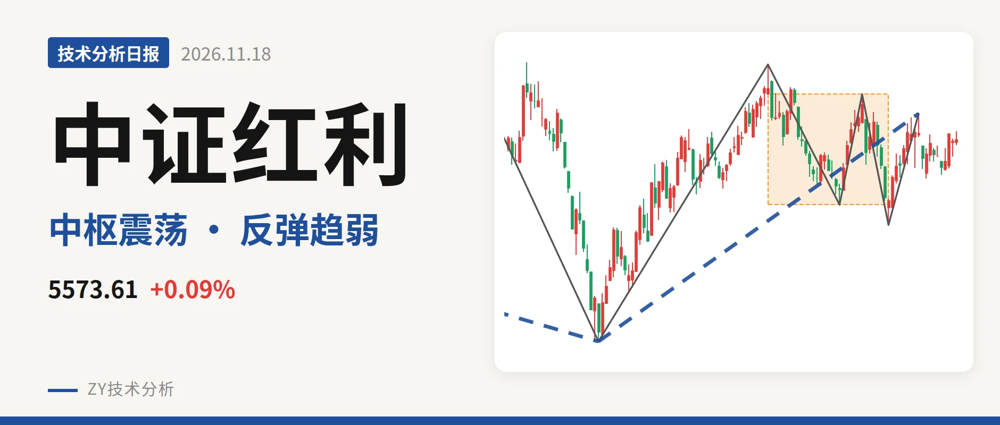
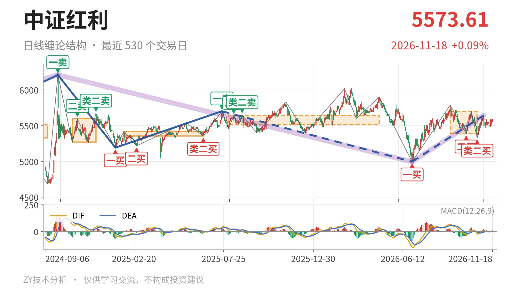
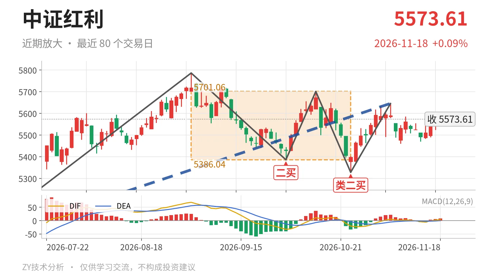

中证红利｜反弹未过5701点 中枢震荡延续

最近日线中枢 5386.04—5701.06点，收盘位于中枢之内
一句话：日线级别处6月30日以来上涨段中，短线围绕最近中枢震荡
🧭 走势结构：上涨段未结束，短线转入震荡
当前不是单边下跌，而是6月30日以来日线上涨线段内的震荡。更大级别走势里，2024年10月8日自6209.67点开始的下跌走势还未结束，但6月30日一买4995.49点后，走出一段日线上涨线段。该线段到11月4日高点5646.01点后，没有出现反向线段破坏，仍在延续。10月23日至11月4日上涨笔结束后，11月5日以来十根K线最高5596.04点、最低5460.31点，未形成新笔，说明上涨线段暂时歇脚，并不是转折。

🎯 中枢与位置：仍在区间内，中枢扩展
最新收盘5573.61点位于9月1日至10月23日的中枢区间5386.04—5701.06点之内，距上沿约127点，距下沿约188点，略高于中轴5543.55点。该中枢与2025年8月4日至2026年4月30日的中枢区间5518.46—5639.99点明显重叠，构成中枢扩展，而不是中枢下移。最近两个中枢的中轴分别为5579.23点和5543.55点，最新价恰在中轴附近，说明多空尚未分出方向。
🔁 买卖点：二买、类二买仍属日线笔级别
6月30日一买4995.49点之后，9月29日二买5386.04点、10月23日类二买5328.30点依次出现。类二买低于二买约58点，但没有跌破一买，属于回踩不创新低。10月23日类二买后的反弹高点为5646.01点，未能升破中枢上沿5701.06点，因此9月29日二买和10月23日类二买目前只在日线笔内有效，不能视为线段级别反转。上方2025年7月23日一卖5702.03点与中枢上沿几乎重合，构成上方结构位。

📉 背驰：反弹力度递减，未破上沿
最直接的对比是9月29日至10月14日与10月23日至11月4日两笔上涨笔。前者红柱面积85、DIF高点11.1，后者红柱面积65、DIF高点5.7，面积和DIF同步走弱；价格高点也从5701.06点降至5646.01点，未能创新高，因此不是“新高不新强”，而是中枢上沿附近的反弹力度递减。当前11月5日以来最低5460.31点仍未跌破10月23日低点5328.30点，所以仍属于上涨线段内部的中枢震荡。最新DIF 4.1在零轴上方，DEA -0.2尚在零轴下方，红柱8.6，短线修复还未把中线动能拉回零轴上方。
⚖️ 关键位置观察：站上5701点之前偏中性
上方观察位5701点附近。若反抽不能重新站上5701点上方，结构上仍只是中枢震荡，9月29日二买与10月23日类二买继续只对应较小级别。下方观察位5386点附近；若回落跌破5386点，要看10月23日类二买低点5328点是否失守，失守则6月30日以来的上涨线段被破坏。重新站上5701点上方，上涨线段才可能离开中枢向上延续。当前价格5573点位于中枢中轴上方，但上沿未破，结构偏中性。
⚠️ 本文为基于公开行情数据的缠论技术结构记录，由程序自动计算并生成，仅供学习交流，不构成任何投资建议。市场有风险，投资需谨慎。